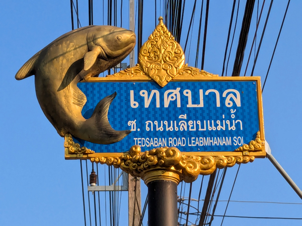
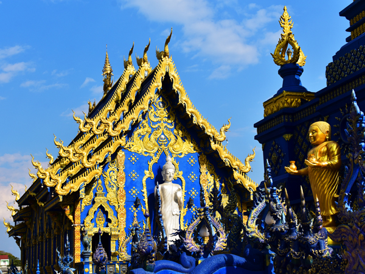
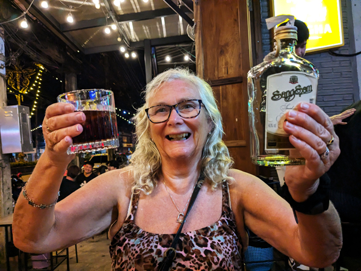
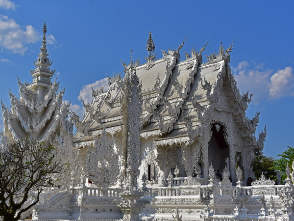
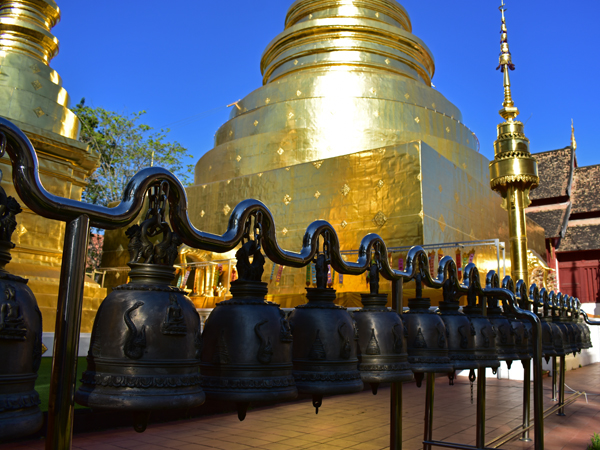
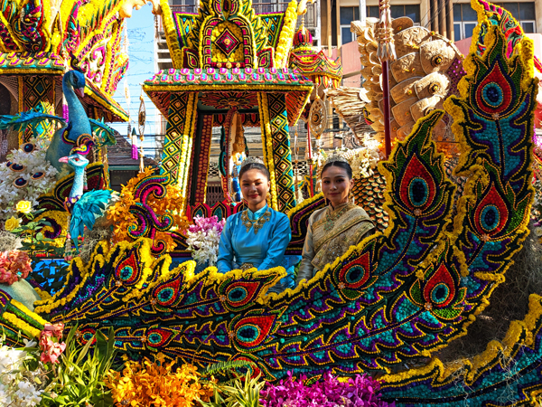
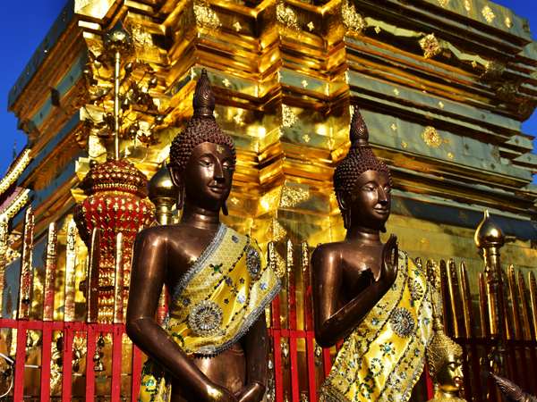
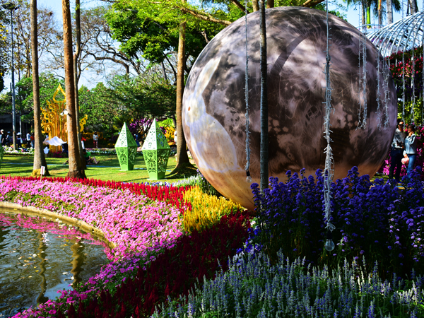

Wednesday 11th February We got up at 6ish to watch the sunrise. We have a balcony that is perfectly placed to watch the sun coming up over the river. However, despite it looking good early on, there was too much cloud around and the sun never really appeared properly.
We went down for breakfast then went for a bit of a look around Chiang Khong. We walked along the bit of the river in front of the hotel and then up to the main road to see the lampposts and road signs that are decorated with fish. We were about to go back to the hotel when we spotted a wat (Wat Sri Don Chai), not far up the road so went to have a look at that. This was quite a spectacular building but was also a monk school. We watched the monks lining up and chanting for five minutes or so before returning to the hotel.

We packed up our things and, just before leaving the room, watched our boat starting its journey back down the river towards Luang Prabang. We checked out at about 9:45 and tried to order a Grab taxi to take us to Chiang Rai. This did not go well. Despite the app telling me that it would cost just over ฿1000 and that the car was about 10 minutes away, whenever I tried to book there were "no drivers available".
We gave up at 10 and walked out to the main road. We knew that public buses went to Chiang Rai from outside the 7-Eleven and headed in that direction. As we got to the main road we could see a bus parked near-by. This happened to be the one VIP bus a day that goes to Chiang Rai. We bought the last two available seats and it left on time at 10:30. Although this was not as quick as the taxi, it was very comfortable and a lot cheaper. We arrived at Chiang Rai Bus Station 2 at about 13:00. The bus station was about 4 miles out of town. We got a tuk-tuk that took us to Le Patta Hotel where we were booked in for two nights.
After a bit of unpacking, we decided to go straight out and do some sight-seeing. We had been to Chiang Rai before 25 years ago but I had been ill when we arrived and spent most of the time here in the hotel room. We decided we would walk to Wat Rong Suea Ten (Blue Temple) and planned a route that would take in a few things on the way.
We started by walking to the two clock towers. We went first to the "New Clock Tower" which was very gold and ornate and then to the "Old Clock Tower" which was a bit plain and boring in comparison. We then went to Wat Mung Muang which was not on our list but was a good additional sight before walking to Wat Phra Singha which was also very good.

We then had a 1.5 mile walk to Wat Rong Suea Ten. This is a relatively modern temple (finished in 2016) and is a slightly strange place. It was a bit more like a theme park than a religious site but was quite spectacular and very photogenic. This was the end of our sight-seeing for today. We got a tuk-tuk back to the centre and went to 7-Eleven to buy a few things for tonight. The hotel we are staying in does have a pool but we decided to have a few hours in the air-conditioning instead.

We had a couple of drinks on the balcony before going out at 8ish. We went for a beer at Smo Bar. This was an OK craft beer place but you had to pay to use the toilets so we only stayed for one drink. We did not really know where we were going to eat but found Awe's Cafe which Roz had read about earlier. This was a small place but had very good cheap food and we had a bottle of Sang Som with our meal. On our way back to the hotel we found Factory. This was a very busy bar packed with locals. We had another bottle of Sang Som in there before walking back.
Thursday 12th February We got up and had breakfast but did not do a lot for the rest of the morning. I went out at about midday to get my hair cut and then joined Roz by the pool for an hour or so.
There was one more sight that we wanted to see in Chiang Rai, Wat Rong Khun or White Temple. We walked to the bus station (Bus Terminal 1) just after 2pm in the hope of being able to get a bus out to the temple, about 15km out of Chiang Rai. After a bit of waiting around, the bus pulled in but it was not departing until 3pm. A songthaew driver offered to take us there, wait and bring us back for ฿300 which seemed a reasonable deal so we went with him.

The White Temple was even more theme-park-ish than the blue one yesterday. It was quite a bizarre place. Again it was quite spectacular and photogenic but despite being a working monastery, it had a feel of something that had been built primarily to be a tourist attraction. We spent about an hour wandering round and then returned to our songthaew. We were back in the hotel just before 5.
We did not do a lot for the next couple of hours. We went out at 7 and had a look round the night bazaar which is only a few minutes walk away. We wandered round the stalls, bought a couple of things and ate in the food court type place. After eating, we took money out and returned to the hotel for a video call with Mum, Jane and Sid.
Friday 13th February We were up at 6 and in breakfast when it started at 6:30. We checked out and left the hotel at 7:15 and walked the short distance to Bus Station 1 and waited for the 8:00 VIP bus to Chiang Mai. The bus got into the station at about 7:45 and left on time. Once again, we had seats at the front of the bus and it was a very comfortable journey. We got into Chang Mai Bus Terminal 3 at exactly 11:20 (the scheduled arrival time) and got a tuk-tuk to the Gategaa Village Hotel. We could not check into our room when we arrived so had an hour or so by the pool until our room was ready at 1pm.
Once again, we have another very nice room. We have had some sort of upgrade so have a suite with kitchen area and plenty of space again. It is on the ground floor so the balcony is not great but will be very nice for the next three days.
After unpacking and washing a few things, we went out to see the sights again. We have been to Chiang Mai a few times but not since 2006 so don't really remember most of what is here.
We are staying just across the Ping River from the old city so started our walk by crossing the river and walking towards the Tha Phae Gate. We stopped to look around Wat Buppharam and also had lunch before entering the city through the gate. We were heading for Wat Chedi Luang in the very centre of the city but also stopped at Wat Phantao which was very nearby. After walking round these, we headed for our final temple of the day - Wat Phra Singh.

We are just about getting to the limit of our temple viewing now and some are getting a bit repetitive, but the gold chedi or stupa behind the main building was a very spectacular sight to end the day with. We bought a few things from 7-Eleven and got a tuk-tuk back to the hotel.
One of the reasons we had chosen the hotel we are in is its proximity to The Riverside Bar and Restaurant, a place we have eaten in regularly on previous visits to Chiang Mai. We had a few drinks on the balcony before heading there at 8ish. The place seemed to be a lot smaller than when we were here last and the food was probably not quite as good as before but it was still a good meal, especially the sausages. We had a bottle of Sang Som with the meal and then returned to the balcony for a few more drinks.
Saturday 14th February Unknowingly, we have timed our stay in Chiang Mai to coincide with the three-day flower festival. The highlight of this event is supposed to be the parade which we knew started from the bridge near where we are staying sometime this morning. When we woke just after 8:00, we could hear music coming from somewhere outside so went out to see what was going on.

The parade had not yet started but all the floats and participants were lined up in the street leading down to the bridge. Bands were lined up along the river which was the noise that we could hear from the room. It was an ideal time to have a look at it all without the big crowds we would have to have put up with when it began properly. We walked the length of the parade and then back to the bridge again. As the whole thing was starting to move, we returned to the hotel for breakfast.
After breakfast we had an hour or so at the pool.
Todays sight-seeing consisted of a trip out to see Wat Phra That Doi Suthep. This all took quite a bit of time. We left the hotel at 2ish and walked through the old city to the Chang Phueak Gate on the North of the city walls. We found where the songthaews went from but had to wait about 20 minutes for more customers. They are supposed to leave when there are a minimum of six people. Our driver eventually gave up waiting and offered to leave with four of us if we all paid ฿200 instead of ฿160.
It was a 15 km drive to get to the bottom of the steps leading up to the temple. We then had to climb the 309 steps to get to the temple itself. Despite the number of temples we have visited in the last week, this one was very impressive. The site also had very good views looking back down at Chiang Mai.

We had 90 minutes at the site before being driven back down again. We were back in Chiang Mai just after 6pm. We bought our provisions for tonight and then got a tuk-tuk back to the hotel.
We had a similar evening to yesterday. We had a few drinks before going out, walked to The Riverside again and then returned to the room to watch the football and rugby.
Sunday 15th February Did not do a lot all morning apart from having breakfast and going to the pool. Today's sight-seeing consisted of a walk round the edge of the old town. We started by crossing the river lower down than normal and walking into the Night Bazaar area. We had both been starting to fancy Western food in the last couple of days so went to McDonalds for lunch. From there, we kept going until we reached the city walls in the South-Eastern corner of the old city. We walked along the Southern side of the city to Buak Hard Public Park where the Flower Festival was taking place.

As well as the park being filled with flowers, we saw all the floats that we had seen yesterday morning again. From there, we walked back to the Northern section of the walls. We had seen a couple of temples (Wat Rajamontean and Wat Lok Moli) as we had come back in last night and thought they may be worth a look. Both quite interesting but we have definitely both seen enough temples now for this trip. We eventually got a tuk-tuk back and were back at the hotel just after 5pm.
In the evening, we walked back to the Night Bazaar. Oxford v Sunderland was due to kick-off at 9pm. We were considering trying to watch it in The Red Lion. We had a wander round the market and ate at the food court before heading back in the direction of the pub. When we got there, another game had gone to extra time and it did not look as if they would be showing Sunderland. Instead, we walked back to the hotel and just about managed to stay awake to watch it on the laptop.
Monday 16th February Today we started our journey back towards Phuket. Owing to it being Chinese New Year and us booking this trip relatively late, a lot of flights were either full or too expensive. The best option we could find was a flight to Don Muang today and another flight to Phuket tomorrow. We had booked the Don Muang Armani for tonight.
We went to breakfast and then had an hour or so in the room before checking out at 10:45. We walked out to the main road and got a tuk-tuk to the airport. We were there by 11:15 and had a couple of hours wait for our 13:00 Air Asia flight. We departed at 13:15 and landed at Don Muang at 14:30. Despite emails stating otherwise, we were able to walk straight out of the terminal and over the footbridge to the hotel. By 15:00, we were checked in.
We had an hour or so by what is a very nice pool and then I went off to 7-Eleven to buy things for tonight.
We had a couple of drinks on the balcony and then went out for the evening. I had searched for near-by craft beer bars, not really expecting to find anything but found MidLand which looked good and was 2km away. We walked there and it was a very good bar. We had a few very good beers in there and also a couple of very good pasta dishes. We got a taxi back to the hotel just after 11.